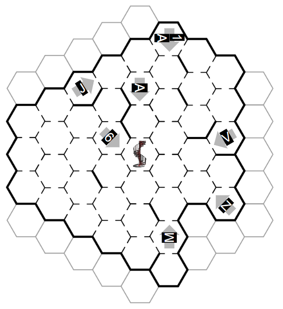

Solution: Rovers
Answer: GOLF
Written by Thomas Gordon; art by Olga Vinogradova
Some key realisations must be made in order to start: firstly, the rovers are placed on the second floor of the Library, which is laid out differently to the first (and the interactive Library); secondly, the About Page describes how the hexes are numbered, which can be verified by clicking through the interactive Library.
Some time should also be spent understanding how the rovers move. Each rover has a series of instructions, which it executes one at a time (one each "minute"). The rover can wait one minute (✕), move forward one hex in the direction it is facing (↑), spin clockwise 60 degrees (↻), or spin anticlockwise 60 degrees (↺). The number next to a symbol indicates how many times that instruction should be executed; so a ↑3 means move forwards three times. Rovers can also collide with each other (either by being in the same hex at the same time, or trying to pass through the same door at the same time in opposite directions) and the walls of the Library. Rovers also do not disappear when they complete their code blocks; they hang around, causing problems.
With all of that understood, we can start to place the rovers.
Rover Placements
All rovers are uniquely placeable using just their perspectives.
| Image | Location and Perspective |
| 1 | J facing ENE |
| 2 | 6 facing ESE |
| 3 | V facing WSW |
| 4 | A facing S |
| 5 | M facing N |
| 6 | Z facing WNW |
| 7 | 1A facing S |
Here's our rover starting placements:

Rover Code Blocks
Now we can start associating code blocks to rovers. Since code blocks tell us how rovers move regardless of where they start, we can map out what hexes they must move through and then work out which starting placement that rover must have (out of our limited options) in order to avoid smashing into walls. This uniquely determines all of the code block associations:
| Image | Location and Perspective | Code Block |
| 1 | J facing ENE | 5th |
| 2 | 6 facing ESE | 6th |
| 3 | V facing WSW | 3rd |
| 4 | A facing S | 1st |
| 5 | M facing N | 4th |
| 6 | Z facing WNW | 2nd |
| 7 | 1A facing S | ??? |
We now have six rovers moving around each other, never colliding. (A complete slideshow of each of the rovers' movements, synchronised, is here. This also includes the movement of the final rover, which will be determined below.)
Time to determine where the final rover can go.
The Final Rover
The final rover must make a specific series of moves (waiting, turning anticlockwise, moving forward, turning anticlockwise, moving forward, turning anticlockwise, and moving forward in that order) and end on hex M. This means that the rover can only move in three line segments and turn twice after picking an initial direction!
The final rover has no paths that work going ESE first (i.e. right), since its suitable paths are blocked by walls. The rover also can't start by moving downwards, since that would require a starting turn that is a multiple of 6. By process of elimination, it must start by going WSW (i.e. left)!
Let's consider all possible paths. There are, broadly, two kinds of paths; "C paths", where the two turns are both 60 degrees anticlockwise (or, in one case, 60 degrees and 120 degrees) respectively; and "hook paths", where the two turns are 120 degrees and 300 degrees anticlockwise respectively. (These paths are named for their shapes.)
Examining each of these hook paths:
| Path Shape | Reason It Can't Work |
| forward 1, turn 120°, forward 1, turn 300°, forward 5 | Collides with rover 1 in hex 5 (the final rover is forced to leave after minute 24, and can't reach that hex before rover 1 ends there) |
| forward 2, turn 120°, forward 2, turn 300°, forward 4 | Collides with rover 1 in hex 5 (the final rover is forced to leave after minute 24, and can't reach that hex before rover 1 ends there) |
| forward 3, turn 120°, forward 3, turn 300°, forward 3 | Collides with a wall |
| forward 4, turn 120°, forward 4, turn 300°, forward 2 | Collides with rover 1 in hex 5 (the final rover is forced to leave after minute 24, and can't reach that hex before rover 1 ends there) |
| forward 5, turn 120°, forward 5, turn 300°, forward 1 | Collides with rover 5 in hex Y (the final rover can't reach that hex before rover 5 ends there) |
And C paths:
| Path Shape | Reason It Can't Work |
| forward 5, turn 120°, forward 5, turn 300°, forward 1 | Collides with rover 5 in hex Y (the final rover can't reach that hex before rover 5 ends there) |
| forward 1, turn 60°, forward 6, turn 120°, forward 1 | Collides with rover 4 in hex 2 (the final rover can't reach that hex before rover 4 ends there) |
| forward 1, turn 60°, forward 5, turn 60°, forward 1 | Collides with rover 4 in hex 2 (the final rover can't reach that hex before rover 4 ends there) |
| forward 2, turn 60°, forward 4, turn 60°, forward 2 | Collides with rover 3 whilst traveling south |
| forward 3, turn 60°, forward 3, turn 60°, forward 3 | Collides with a wall |
| forward 4, turn 60°, forward 2, turn 60°, forward 4 | Collides with rover 5 in hex Y (the final rover can't reach that hex before rover 5 ends there) |
| forward 5, turn 60°, forward 1, turn 60°, forward 5 | Might work! |
That last one doesn't seem to fail for any reason. Let's check that one out. This is the code block it implies (note that it can spend extra turns spinning and waiting, so we don't know what those numbers are yet):
[✕? ↺? ↑5 ↺? ↑1 ↺? ↑5]
The time that the final rover leaves hex 1A is pretty constrained. Too soon, and it will collide with rover 2 (or rover 1 if you're really quick). Too late, and it will collide with rover 1 as it enters hex 1A. The final rover ends up having to leave hex 1A at either minute 25 or minute 26.
If the final rover leaves hex 1A at minute 25, it will be traveling one hex behind rover 2 as it makes its way down that WSW hallway. Thus, when rover 2 spends a turn spinning on hex 1L, the final rover will collide with it there! Thus, it must leave hex 1A at minute 26, the last possible second. This gives us the following code block:
[✕20 ↺5 ↑5 ↺? ↑1 ↺? ↑5]
We will need to engineer our turns such that the final rover dodges all of the moving rovers. The moves to be wary of here are rover 2 moving out of hex 1J in minute 33 (we need to pass through that hex); rover 6 moving out of hex W in minute 46 (ditto); and rover 3 moving into hex 1L in minute 40 (that's where we are!).
For our first turn, we can't just turn once, because we'll run into rover 2 before it moves out of the way; and we can't turn 13 times, because rover 3 will run into us. Turning 7 times works.
For our second turn, again turning once will lead to us running into rover 6; likewise with turning 7 times. Turning 13 times is the minimum amount of time it takes for us to wait for rover 6 to move. (And, if we wait any longer, rover 3 will run into us again!)
Thus, our unique solution for the final rover's movement:
[✕20 ↺5 ↑5 ↺7 ↑1 ↺13 ↑5]
Extraction
Converting the final rover's moves into letters using A1Z26 gives us the phrase TEEGAME.
Tees are pieces of equipment used in games of golf; hence, the answer to the puzzle is GOLF.
Author’s Notes
Thomas: I really wanted to write a puzzle like this, because the unique spatial design of the Library allowed for some interesting deductions to be made. I loved making the Library feel like an actual, real space, and I hope that this puzzle made it come alive for just a few.
This was also a puzzle which was, weirdly enough, more difficult if you didn't pay attention to the story. Teams which did understood implicitly that the second floor was laid out differently to the first; teams which ignored the story were at a disadvantage. To teams affected by this, I can only say: skill issue.
However, by virtue of this being one of the last puzzles completed for the hunt, there are a number of inelegancies that also tripped solvers up, and I'm unhappy with a few of them. If this puzzle had had just a little more time to incubate, there probably would have been nicer cluing on several things, or even maybe a whole other step to the logic. As it stands, this is the puzzle that went out, and I'm still fairly pleased with it on the whole.